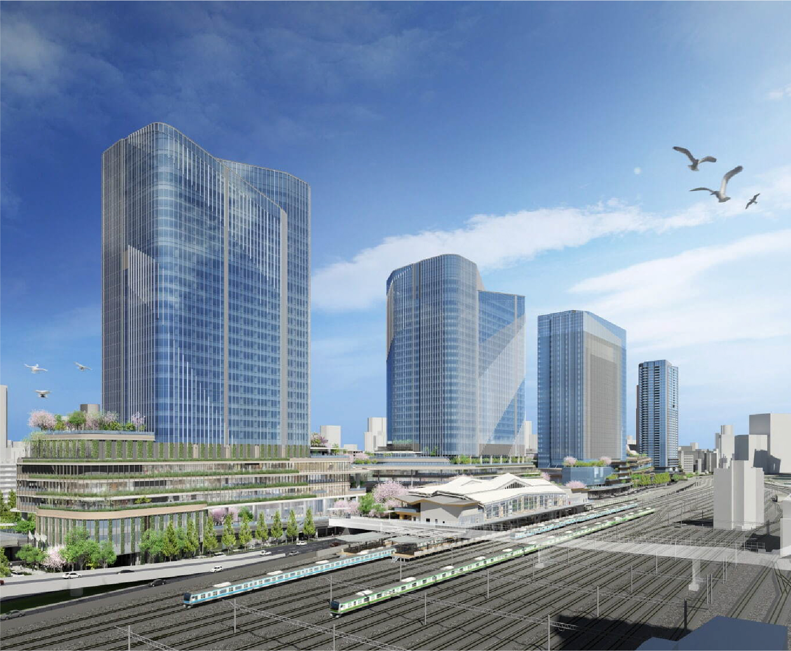
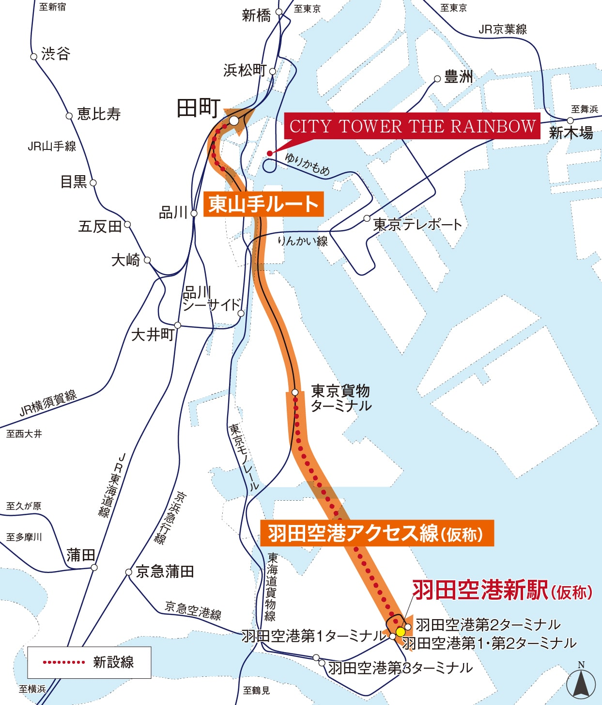

航空写真
芝浦、高輪、
芝、麻布、赤坂。
それぞれの街の個性が、
日々を豊かに
彩ってくれる。
「CITY TOWER THE RAINBOW」に住まいを構えること。
それは、港区を日常のフィールドとする自由を手にすること。
ビジネスもレジャーも、都市も自然も、伝統も未来も。
これらにつながるポジションが、豊かな都市生活を演出します。
■広域エリア概念図

1.東京タワー（約3,170m） 2.東京ミッドタウン（約4,550m） 3.けやき坂（約4,070m） 4.有栖川宮記念公園（約3,550m） 5.六本木ヒルズ（約4,300m） 6.高輪ゲートウェイ駅（約2,500m） 7.お台場（約2,140m） 8.芝浦運河（約280m）
REDEVELOPMENT
「品川」駅のリニア中央新幹線開業（予定）を見据え、
日本の成長を牽引する国際交流拠点へ。
芝浦・港南を含むこのエリアは、日本の未来を切り拓く重要な拠点として急速に発展しており、
「品川」駅リニア中央新幹線の開業（予定）を見越して、国際的な交流とイノベーションの中心地としての役割を強化しています。
また本物件近くは広い歩道が整備され、それに続く美しい並木道が、毎日の生活に充実感と安らぎを与えてくれます。
■立地概念図
芝浦公園（約1,020m/徒歩13分）
芝浦公園（約1,020m/徒歩13分）
魅力的な進化を遂げ、
今も変わり続ける都心。
-
提供画像（完成予想図）
芝浦一丁目計画
（主要用途：事務所・商業施設・ホテル・駐車場等）
■都市計画決定時期：2018年3月
■竣工予定時期：S棟2025年2月、全体2030年度浜松町ビルディングの建替事業として、新しい都心のランドマークとなるプロジェクトです。S棟の高層部に日本初進出のホテルブランド、N棟の高層部に住宅を計画しており、中層部はオフィススペースとして活用され、ビジネスエリアとしての機能を果たします。また低層部では飲食店を中心に構成され、地域に住まう方や訪れる人々に寛ぎの場を提供します。
※出典：東京都都市整備局HP、芝浦プロジェクトHP
（2023年12月現在） -
提供画像（完成予想図）
-

提供画像（完成予想図）
-
高輪ゲートウェイシティ
（主要用途：オフィス・商業・生活支援施設・
住宅・ホール・ホテル等）
■2025年3月開業予定2020年に誕生した「高輪ゲートウェイ」駅を起点としたまちづくりが進められています。南北に広がる敷地を４つに区分けし、各街区の建物を多数の島々が連なる日本列島に見立てた街全体のランドスケープ。そして各建物の低層部に豊かな緑を連ね、個性を持ちながらも建物同士がつながる一体感の創出など、100年先を見据えた「Global Gateway」にふさわしいまちづくりを目指しています。
※出典：東日本旅客鉄道株式会社HP（2023年12月現在）
-
提供画像（完成予想図）
浜松町二丁目地区
第一種市街地再開発事業（主要用途：住宅・事務所・公益施設・店舗・駐車場・地下鉄施設等）
■工事完了（予定）：2026年度本事業は、世界貿易センタービル建替えを始めとする隣接街区とともに、浜松町駅西口地区地区計画の指定を受けて進行する第一種市街地再開発事業です。都市に潤いと賑わいをもたらす多様な機能の導入と、駅と周辺市街地をつなぐ結節点となる安全で快適なまちづくりを目標とし、共同住宅、事務所、商業施設等を整備します。
※出典：株式会社世界貿易センタービルディングHP、港区HP（2023年12月現在）
-
提供画像（完成予想図）
-
提供画像（完成予想図）
-
三田小山町西地区
第一種市街地再開発事業（主要用途：住宅・事務所・店舗・保育園・駐車場等）
■工事完了（予定）：2028年度本プロジェクトでは、約1,450戸の共同住宅をはじめとして、オフィスや店舗、公園を一体で開発するとともに、近傍の麻布十番エリアへつながる動線を設け、エリア全体の回遊性・利便性を高めることに加え、地域の方が憩い、交流できるような緑あふれる広場や歩行者空間を整備します。
※出典：三井不動産レジデンシャル株式会社HP、港区HP
（2023年12月現在）
空港への移動を短縮する、
羽田空港アクセス線（仮称）の工事がスタート。
-

■羽田空港アクセス線ルート図
-
羽田空港から既存の鉄道ネットワークを活用して、「東京」駅、「上野」駅などをダイレクトに結ぶ計画。羽田空港の国内線第1ターミナルと第2ターミナルの間に「羽田空港新駅（仮称）」を建設。計画ルートのうち、東京貨物ターミナルまでの約5.0kmの区間に設ける「羽田空港アクセス線（仮称）」は、2023年3月24日付で国土交通省より工事施行認可を取得、そこから「田町」駅付近へ向かう「東山手ルート」は、2023年1月31日付で国土交通省より鉄道施設変更認可を取得し、2031年度の運行開始を目指しています。
※羽田空港アクセス線（仮称）／2031年度開業予定
出典：東日本旅客鉄道株式会社HP（2023年12月現在）image photo
リニア中央新幹線
「品川」駅が開業予定。
LINEAR CHUO SHINKANSEN
-
image photo
-
品川には、長く待望された
「リニア中央新幹線」の始発駅が開業予定。
時速約500kmのスピードを誇る次世代の新幹線が、
名古屋まで直通約40分のかつてない
アクセスを実現します。
■リニア中央新幹線路線図 ※品川・名古屋間：2027年開業予定。品川・新大阪間：2045年開業予定。一部区間の工事遅延により遅れる見通しがあります。 ※出典：国土交通省HP、JR東海HP（2023年12月現在）
※掲載の所要時間は待ち時間・乗換え時間を含んだ通勤時（カッコ内は平常時）の目安であり、時間帯により多少異なります。
※掲載の航空写真は六本木付近上空から南西方面を撮影（2023年11月）したものです。また、周辺環境は将来変わる場合があります。
※掲載の広域エリア概念図・立地概念図は一部道路・施設等を抜粋して表記しています。
※掲載の羽田空港アクセス線ルート図・リニア中央新幹線路線図は一部駅・路線等を抜粋して表記しています。
※掲載の距離表示については地図上の概測距離を、徒歩分数表示については80mを1分として算出し、端数を切り上げたものです。
※掲載の環境写真は2023年12月に撮影。
※掲載の情報は2023年12月現在のものです。